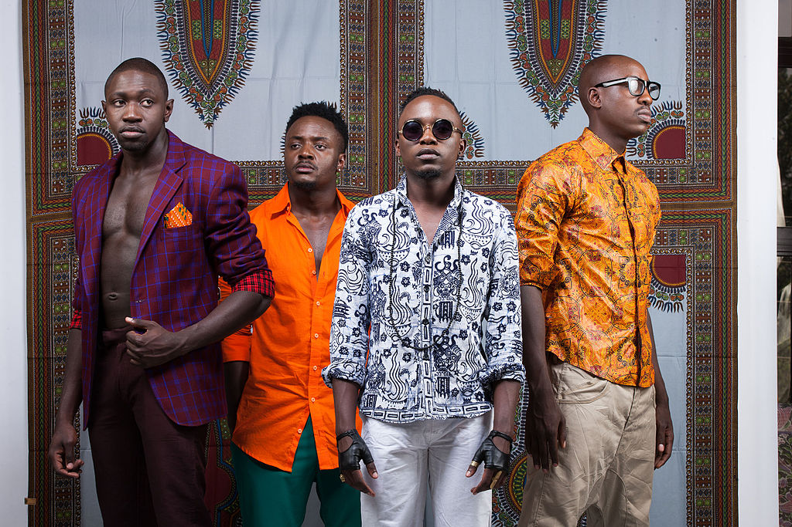

Sauti Sol is made up of four all-boy members namely;
Remember Melvin Alusa who represented Kenya in Big Brother Africa last year? Well, he is actually Bien-Aime Baraza’s older brother.
The band was formed in the year 2005 in Nairobi by the vocalists Willis Chimano, Bien-Aime Baraza, and Savara Mudigi. The band was initially an acapella group and the guitarist, Polycarp Otieno had been a member of the band before they altered the name of their group to Sauti. It was the first of November when they have released their debut solo album named Mwanzo, after which they released their next album named Sol Filosofia on 25th of February 2011. The group has received quite a good amount of nominations during the process as well. You must have heard about Spoek Mathambo, he is a record producer as well as a rapper who has also collaborated with Sauti Sol in the self-titled extended play that was released in June 2012. Sauti Sol has also released its third studio album that was titled Live and Die in Afrika on November 21st, 2015.
one of their hit song Extravaganza